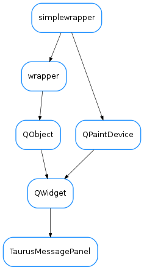

TaurusMessagePanel¶

-
class
TaurusMessagePanel(err_type=None, err_value=None, err_traceback=None, parent=None, designMode=False)[source]¶ Bases:
PyQt4.QtGui.QWidgetA panel intended to display a taurus error. Example:
dev = taurus.Device("sys/tg_test/1") try: print dev.read_attribute("throw_exception") except PyTango.DevFailed, df: msgbox = TaurusMessagePanel() msgbox.show()
You can show the error outside the exception handling code. If you do this, you should keep a record of the exception information as given by
sys.exc_info():dev = taurus.Device("sys/tg_test/1") exc_info = None try: print dev.read_attribute("throw_exception") except PyTango.DevFailed, df: exc_info = sys.exc_info() if exc_info: msgbox = TaurusMessagePanel(*exc_info) msgbox.show()
-
ErrorHandlers= {<class 'PyTango.DevFailed'>: <class 'taurus.qt.qtgui.panel.taurusmessagepanel.TangoMessageErrorHandler'>}¶
-
addButton(button, role=3)[source]¶ Adds the given button with the given to the button box
Parameters: - button (PyQt4.QtGui.QPushButton) – the button to be added
- role (PyQt4.Qt.QDialogButtonBox.ButtonRole) – button role
Returns the button box from this panel
Returns: the button box from this panel Return type: PyQt4.Qt.QDialogButtonBox
-
checkBox()[source]¶ Returns the check box from this panel
Returns: the check box from this panel Return type: PyQt4.Qt.QCheckBox
-
checkBoxState()[source]¶ Returns the check box state
Returns: the check box state Return type: PyQt4.Qt.CheckState
-
classmethod
findErrorHandler(klass, err_type)[source]¶ Finds the proper error handler class for the given error
Parameters: err_type (class object) – error class Returns: a message box error handler Return type: TaurusMessageBoxErrorHandler class object
-
getDetailedHtml()[source]¶ Returns the current detailed HTML of this panel
Returns: the detailed HTML for this panel Return type: str
-
getDetailedText()[source]¶ Returns the current detailed text of this panel
Returns: the detailed text for this panel Return type: str
-
getError()[source]¶ Returns the current exception information of this panel
Returns: the current exception information (same as type as returned by sys.exc_info())Return type: tuple<type, value, traceback>
-
getOriginHtml()[source]¶ Returns the current origin HTML of this panel
Returns: the origin HTML for this panel Return type: str
-
getOriginText()[source]¶ Returns the current origin text of this panel
Returns: the origin text for this panel Return type: str
-
getText()[source]¶ Returns the current text of this panel
Returns: the text for this panel Return type: str
-
loadUi(filename=None, path=None)¶
-
setCheckBoxState(state)[source]¶ Sets the checkbox state.
Parameters: text (PyQt4.Qt.CheckState) – new checkbox state
-
setCheckBoxVisible(visible)[source]¶ Sets the checkbox visibility.
Parameters: visible (bool) – True makes checkbox visible, False hides it
-
setDetailedHtml(html)[source]¶ Sets the detailed HTML of the dialog
Parameters: html (str) – the new HTML text
-
setDetailedText(text)[source]¶ Sets the detailed text of the dialog
Parameters: text (str) – the new text
-
setError(err_type=None, err_value=None, err_traceback=None)[source]¶ Sets the exception object. Example usage:
dev = taurus.Device("sys/tg_test/1") exc_info = None msgbox = TaurusMessagePanel() try: print dev.read_attribute("throw_exception") except PyTango.DevFailed, df: exc_info = sys.exc_info() if exc_info: msgbox.setError(*exc_info) msgbox.show()
Parameters: - err_type – the exception type of the exception being handled (a class object)
- err_value (object) – exception object
- err_traceback (TracebackType) – a traceback object which encapsulates the call stack at the point where the exception originally occurred
-
setIconPixmap(pixmap)[source]¶ Sets the icon to the dialog
Parameters: pixmap (PyQt4.Qt.QPixmap) – the icon pixmap
-
setOriginHtml(html)[source]¶ Sets the origin HTML of the dialog
Parameters: html (str) – the new HTML text
-
setOriginText(text)[source]¶ Sets the origin text of the dialog
Parameters: text (str) – the new text
-
toggledDetails¶
-